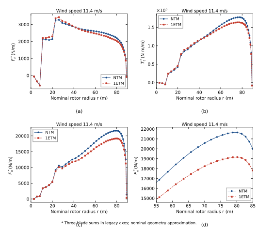

对100～700 s内三片叶片各对应展向节点的气动力进行时均统计。AeroDyn的Fx、Fy为旧式局部输出坐标系下的面外、面内单位长度气动力，区别于弦向坐标系下的Fn、Ft[133]。参照Sun等[138]的展向分布表达方式，图3.5-6采用三片叶片同一展向节点的时均合力密度，名义半径r取轮毂半径2.8 m与叶根展向距离之和，名义切向力、轴向力及转矩密度分别取Fy的三叶片合计、Fx的三叶片合计及名义半径与前者的乘积。由于未输出变形后的局部极坐标节点位置和相应气动力分量，该分布为名义几何近似，不能作为精确转矩积分或有限元载荷映射依据。

图3.5-6 额定风速下三叶片展向气动力及转矩密度分布（名义几何近似）表3.5-1给出了两组工况原生轮毂轴向气动力和力矩的统计结果。两者为求解器直接输出的轮毂气动合力及合力矩，不由图3.5-6的名义几何分布反算。
表3.5-1 额定风速下轮毂轴向气动力及力矩统计（100～700 s）
| 工况 | 轴向力均值/MN | 标准差/MN | 最大值/MN | 轴向力矩均值/(MN·m) | 标准差/(MN·m) | 最大值/(MN·m) |
|---|
| NTM | 1.139 | 0.169 | 1.739 | 9.569 | 1.454 | 16.360 |
| 1ETM | 1.034 | 0.221 | 1.954 | 9.252 | 2.128 | 19.583 |